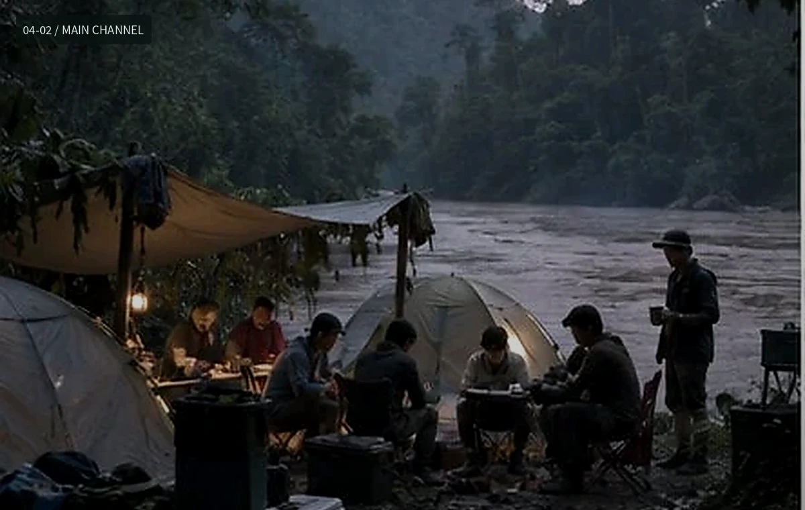
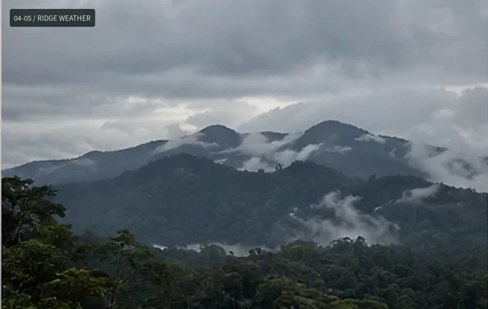
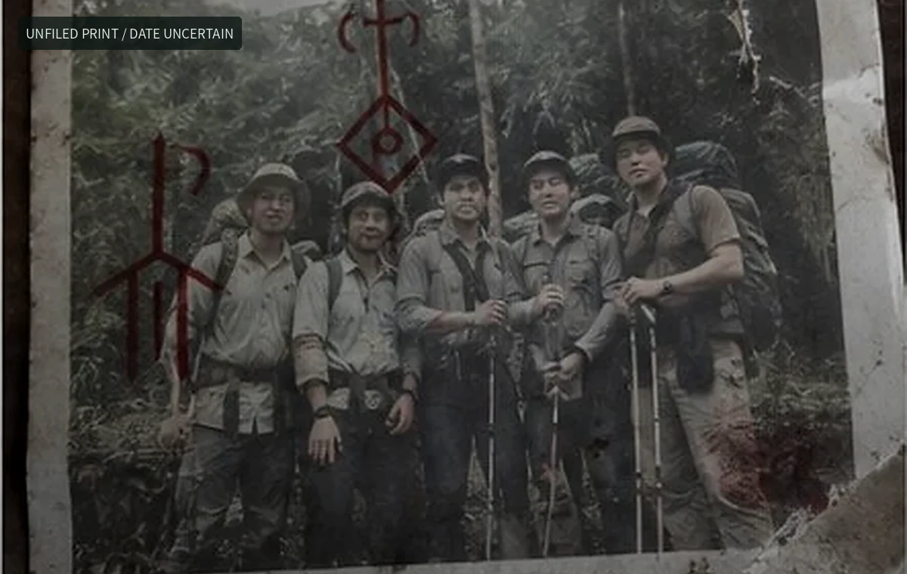

第三支流：一组没有拍完的胶片
我只到了下游公路尽头。再往上没有向导愿意带，雨也开始变大。后来网上有人把其中几张照片标成“无人区深处”，其实不是；它们都能在一天内走回公路。
这组数字化文件保留了冲洗时的编号和裁切边。真正重要的是拍摄位置，而不是后来被转载时加上的标题。
我只到了下游公路尽头。再往上没有向导愿意带，雨也开始变大。后来网上有人把其中几张照片标成“无人区深处”，其实不是；它们都能在一天内走回公路。
这组数字化文件保留了冲洗时的编号和裁切边。真正重要的是拍摄位置，而不是后来被转载时加上的标题。


